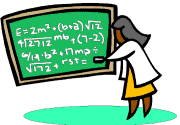

for Writing Math Solutions |
 |
|
Guidelines for Writing Math Solutions Writing a math answer for a Problem of the Week is very different from writing an essay in English class or a term paper in History class, so we would like to give you some guidelines. You write only one document, but we receive sometimes as many as 300-400 (or more) answers per week to read and analyze; when your presentation style is at its best, much time can be saved, a more efficient service can be provided, and everybody will be happier. Readability The first thing that would speed up the evaluation process can be called readability. Sometimes an individual sends us an answer in one long continuous paragraph, with equations embedded in it. Such paragraphs are very hard to read. The solution is simple: just break the long paragraph up into several short ones, each one with its own concept, and leave a blank line between paragraphs. Another matter regarding readability concerns polynomial expressions and equations. Notice the difference between these items: EASY TO READ HARDER TO READ x^2 + 2x + 1 x^2+2x+1 x^3 + 4x^2 - 6x + 10 x^3+4x^2—6x+10 (3a + 4b)(3a - 4b) (3a+4b)(3a-4b) See how a space on either side of a plus or a minus sign makes the reading easier? (This is what good textbooks do.) Similarly, when you show the steps in solving equations, add spaces and align the equals signs, like this (when you align text, never use tabs!):
EASY TO READ HARDER TO READ
2x + 48 = 58 2x+48=58
2x=10
2x = 10 x=5
x = 5
Getting Off To a Good Start After carefully reading a problem, it is essential to determine just what you need to find to answer the question posed. You should now select a letter, or letters, that will represent your unknown quantity, or quantities. This is the famous "Let" statement. Then, and only then, are you ready to begin forming your expressions or equations. Be careful here, however. Many times "Let" statements aren't clear. Examples: GOOD ==> Let x = the number of apples in the basket Use of Guess-and-Check Procedure In general, the method of "guess-and-check" is not allowed in AlgPoW as your primary strategy to solve the problem. This is not saying guess-and-check is not a good way to solve problems. In fact, it is often a good way to start to understand a problem, and therefore recommended for that. But for most of our problems, you must define variables or unknowns, then form equations to solve by logical steps. Historically, it was the main way that problems were solved. But as advances were made in symbolic notation, mathematicians moved away from it and toward the more efficient and time-saving methods of step-by-step manipulations on equations. One of our mentors advises students in the following way: Guess and check is a valid problem-solving approach. However, it also one of the most difficult to explain. If you are going to use guess and check, you must list every guess, along with the reason that you know the answer is incorrect. You also must explain why you know your final answer is the only possible answer. In all, a pretty long process; however, since this is the Algebra Problem of the Week, you might want to try algebra. Please read the "Guidelines for Writing POW Answers." The link is at the bottom of the problem. So, unless otherwise indicated, please do not use guess-and-check as your principal solving procedure. Writing a Complete Answer The Problem of the Week (PoW) project here at the Math Forum, as you probably know, is a very unique one. Unlike other math tests in school or competitions (such as SAT), here we are not only interested in the right answer, but also how you arrived at it. This means, you must show your procedure and steps and thinking along with the final answer.Even more so, your presentation must be explained well as you go from start to finish. Just imagine if you were to show your solution to a friend who was unfamiliar with the problem. Would that friend be able to read it and understand what you were saying? ElemPoW has its own Guidelines document such as this one. Here is what is said there:
One good way to make sure you include enough information in your solution is to pretend you are explaining the problem to a friend who does not know anything about it. Imagine yourself leading your friend on a tour of your thinking as you solved the problem. How did you start? Where did you find the information you used? What were your calculations? How did you check your solution? Math steps without a math explanation in words is much like watching a talented magician on stage. You see all the moves go by rapidly and you are "amazed", but still you are left with the question, "How'd he do that?" Problem solving in PoW is not magic. Our goal is for everybody to understand as much as possible, according to his/her capacity. Again, a thought from the ElemPoW service:
.Our focus here at the Math Forum is not only on getting the correct answer, but also on communicating the steps involved in finding the correct answer. To see the entire ElemPoW document about writing good answers, consult this page: How do you write a good math solution? There is much good advice to be found there.
E-Mail Notation Sometimes we cannot write certain symbols (like exponents or square roots) in e-mail as we do using paper and pencil. Here are some examples: Exponents It is standard now in e-mail to use the ^ (caret sign) found above the 6 on the keyboard for exponents. If we wish to say 'four squared', we write 4^2. For higher powers we do the same: 'The volume of a cube is e-cubed' would be Square roots Some people use the notation popular in spreadsheet applications, e.g. sqrt(16), to mean 'the square root of 16'. This even applies in formulas; for the Pythagorean theorem, we can write:
Other students 'draw' a square root symbol this way:
__ _____
V64 or \/a + b
[A few people try decimal or fractional exponents: 64^0.5 or 64^(1/2), but depending on the font this method can be difficult to read, so it is not recommended. However, there are occasions in which such exponents are better.] Fractions Writing fractions is more complicated. There are two basic styles: vertical (sometimes called 'stacked') fractions, and horizontal fractions. Vertical fractions are what we are used to writing with pencil and paper, and are what you see in books. We can make them in e-mail as well; it just takes more effort and more keystrokes. But they are more readable when we need to write algebraic fractions. 1 15 3a + 4b --- ----- ------------ 2 25 5c - 6d Horizontal fractions consisting only of numerals are easy to write, as these examples show: Two-fourths 2/4 five-sixths 5/6 etc. Even fractions that contain binomials, as shown above, can be written horizontally, if you employ parentheses. Observe: (3a + 4b)/(5c - 6d) The difficulty arises when you need to express something like 'two-thirds of x'. If you write this as 2/3x, it could be misinterpreted as 2 over 3x. Luckily we have ways of clarifying our meaning:
2
Vertical: --- x Horizontal: (2/3)x
3
Now if your intention really was 2 over 3x, you still have two options:
2
Vertical: ---- Horizontal: 2/(3x)
3x
Subscripts Unlike exponents, which go above the line (that's why they're sometimes called 'superscripts'), subscripts go below the line. Unfortunately, the standard keyboard doesn't have a true subscript key. Some people write a_1 for 'a-sub-one', but since many cases that need subscripts occur in sequences, we could write the following:
to stand for a sequence of terms (a-sub-one, a-sub-two, ...). In this context there is no real confusion with multiplying 'a' by 4. We universally write that as 4a. Notice how nice the slope formula can look using vertical fractions with this subscript style:
y1 - y2
m = --------- instead of m = (y_1 - y_2)/(x_1 - x_2)
x1 - x2
The vertical equation looks almost like a line from a textbook, but even a horizontal equation like this one would be preferable:
m = (y1 - y2)/(x1 - x2)
Quadratic Formula The quadratic formula is often needed in algebra problems. Here are two good ways to write it in email answers:
-b +/- sqrt(b^2 - 4ac)
x = -----------------------
2a
Determinants
| 3 5 |
D = | | = (3)(6) - (-1)(5) = 18 - (-5) = 18 + 5 = 23
| -1 6 |
| a b c |
| |
D = | d e f | = aei + dhc + gbf - gec - dbi - ahf
| |
| g h i |
The method you use will often depend on the needs of the specific problem you are working; these comments should be understood as suggestions and general guidelines only. |
| Comments? Send e-mail. | Back to top | Go back to Home Page | Go back to Contents |